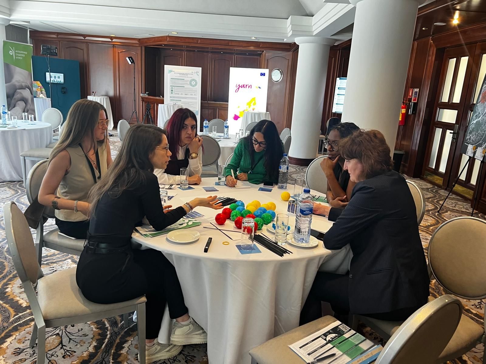
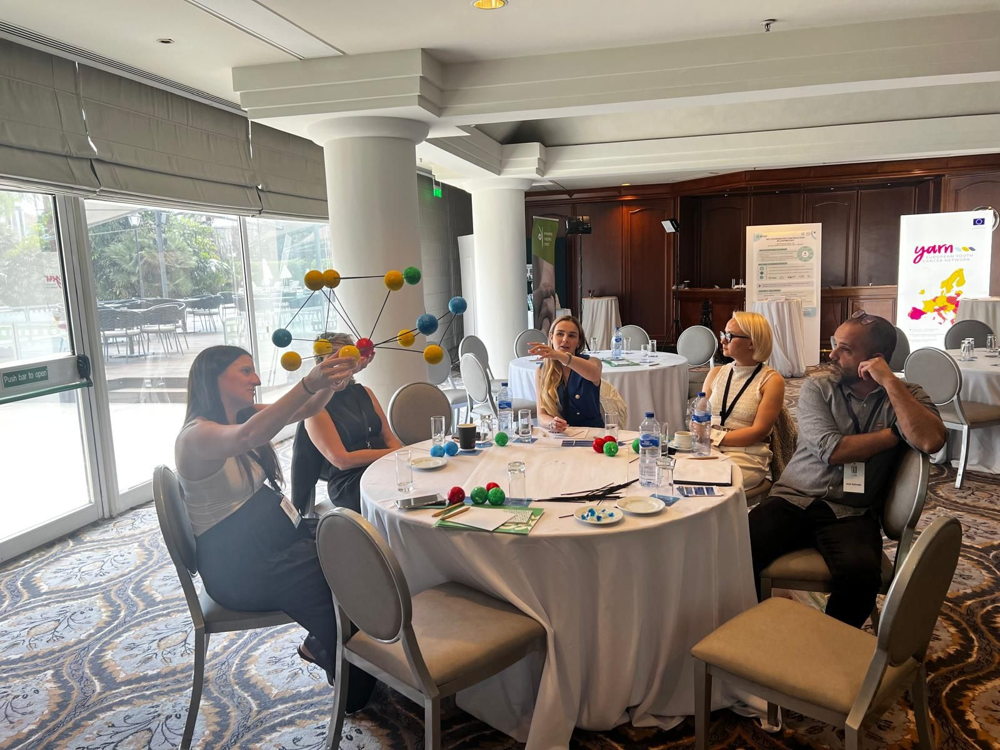

"Mapping Cancer Risk" Workshop at the 2nd European Cancer Mission Fair — from engagement to real impact
April 28, 2026
On April 28, 2026, in Nicosia, the European Cancer Mission Fair brought together stakeholders from across Europe with a shared objective: turning collaboration into tangible impact for citizens.
Organised by the European Commission and the ECHoS | Establishing of Cancer Mission Hubs: Networks and Synergies project, the Fair is a key moment for advancing citizen engagement and implementation within the EU Cancer Mission.
Our contribution
"Mapping Cancer Risk: Network Analysis and Art-Based Community Engagement in Rural Living Labs" — key experience from our 4P-CAN Project.
Speaker:
Hancean Marian-Gabriel — Professor of Quantitative Sociology, Research Director, INOMED
Facilitators & curators:
Bianca-Elena Mihăilă and Bogdan-Adrian Vidrașcu — Researchers at INOMED
The workshop, built on the Lerești Living Lab (Romania), explored a key shift in prevention: from individual behaviour → to networks of influence, trust, and community dynamics.
Participants engaged directly with social network analysis concepts — nodes, ties, and structures — gaining a new perspective on how cancer-related risk factors circulate within communities and how these insights can inform more targeted and effective prevention strategies.
Taking place in the context of the "Art of Networks" exhibition, the session also demonstrated how data can be translated into visual, community-relevant narratives — bridging research and lived experience.
Together, these contributions reflect a simple reality: prevention becomes effective only when it is understood, trusted, and embedded in real communities.
Photo Gallery


© 4P-CAN Project. All rights reserved. Design: Bogdan Vidrascu based on a template from HTML5 UP.